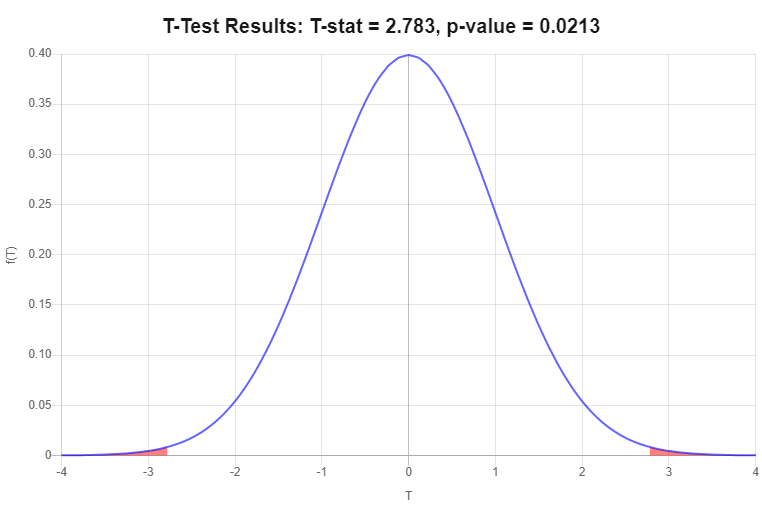
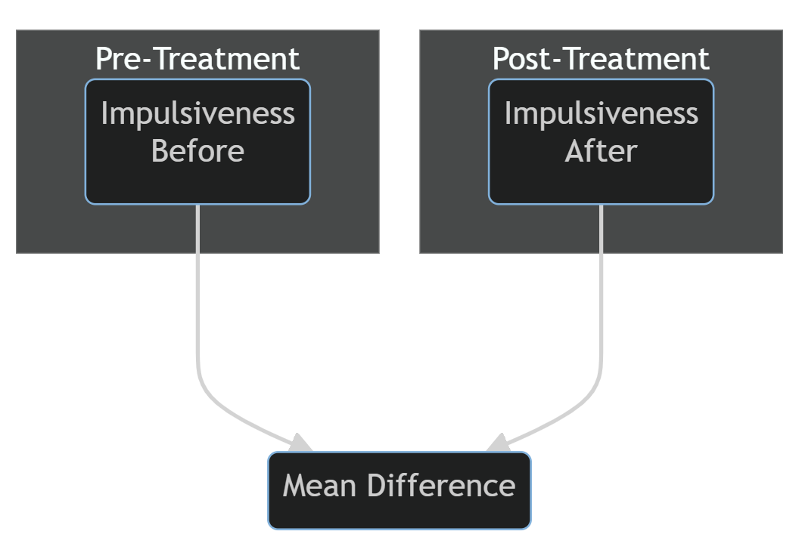
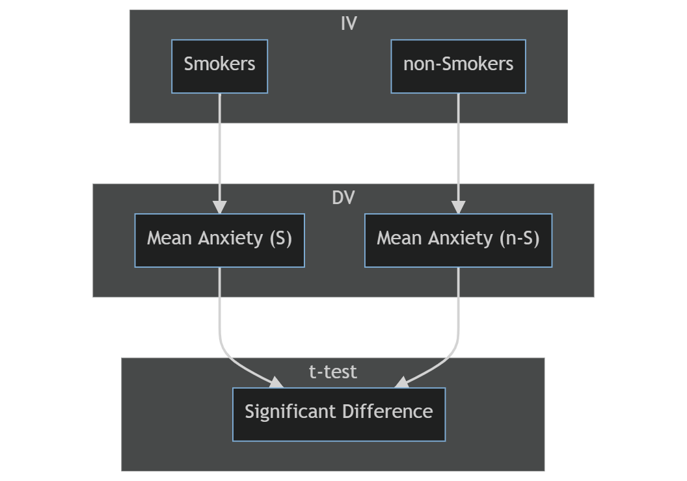

3 main types:
\[ t = \frac{obtained\ mean\ difference}{std\ diff\ expected\ by\ chance} \]
Standard error is estimated using the Central Limit Theorem:
\[ = \frac{\sigma}{\sqrt{n}} = \frac{pop'n\ sd}{\sqrt{sample\ size}} \]
\[ z = \frac{\bar{X} - \mu}{\frac{\sigma}{\sqrt{n}}} \]
This theorem confirms that the larger the sample size, the lower the error
Compares a single sample mean to a population mean (when we do not know \(\sigma\))
\[\begin{align} H_0: \mu = 7.01 \\ H_a: \mu \ne 7.01 \\ \end{align}\]
| \(X\) | \(X-\bar{X}\) | \((X-\bar{X})^2\) |
|---|---|---|
| 8.5 | -1.37 | 1.88 |
| 12.1 | 2.23 | 4.97 |
| 10 | 0.13 | 0.02 |
| 5.2 | -4.67 | 21.81 |
| 15.3 | 5.43 | 29.48 |
| 6.2 | -3.67 | 13.47 |
| 9.1 | -0.77 | 0.59 |
| 10.2 | 0.33 | 0.11 |
| 7.9 | -1.97 | 3.88 |
| 14.2 | 4.33 | 18.75 |
\[\begin{align} \bar{X} = ??? s &= \sqrt{\frac{\Sigma(X-\bar{X})^2}{n-1}} = \sqrt{\frac{95}{9}} = 3.25 \\ t &= \frac{\bar{X} - \mu}{\frac{s}{\sqrt{n}}} = \frac{9.87 - 7.01}{\frac{3.25}{\sqrt{10}}} = \frac{2.86}{1.03} \\ &= 2.78(df = 9) \end{align}\]

Reporting
‘The drug users in this sample reported significantly higher levels of impulsivity compared to the general population, t(9) = 2.78, p < .05.’

A matched samples t-test tells us whether the change in mean scores is statistically significant
| Before | After | Difference |
|---|---|---|
| 9.6 | 7.1 | 2.5 |
| 10.5 | 7.6 | 2.9 |
| 12.4 | 8.2 | 4.2 |
| 8.7 | 7.7 | 1.0 |
| 8.5 | 6.5 | 2.0 |
| 11.2 | 8.2 | 3.0 |
| 15.1 | 9.7 | 5.4 |
| 9.4 | 8.3 | 1.1 |
| 14.3 | 13.2 | 1.1 |
| 12.1 | 8.4 | 3.7 |
| 13.7 | 9.3 | 4.4 |
| 10.2 | 7.0 | 3.2 |
| 13.8 | 8.8 | 5.0 |
| 8.9 | 6.9 | 2.0 |
| 14.5 | 8.1 | 6.4 |
\[\begin{align} \bar{D} &= 3.19 \\ s &= \sqrt{\frac{\Sigma (D-\bar{D})^2}{n-1}} = \sqrt{\frac{38.17}{14}} = 1.65 \\ t &= \frac{\bar{D} - 0}{\frac{s}{\sqrt{n}}} = \frac{3.19 - 0}{\frac{1.65}{\sqrt{15}}} = \frac{3.19}{0.42} \\ &= 7.59(df = 14) \end{align}\]
Represented by Cohen’s d, and reports the difference in standard deviation units. (0.20 = small, 0.50 = moderate, 0.8+ = large)
\[\begin{align} \bar{X_1} &= 11.53 \\ \bar{X_2} &= 8.33 \\ d &= \frac{\bar{X}_1 - \bar{X}_2}{s_{X1}} = \frac{11.53 - 8.33}{2.32} = 1.38 \\ \end{align}\]
Reporting
Matched Sample t-test
‘Overall the sample were significantly less impulsive following the treatment program (M = 8.33, SD = 1.61) than they were before it (M = 11.53, SD = 2.32), t(14) = 7.59, p < .05.’
Effect Size
‘Impulsivity has reduced by almost 1.5 SD of pre-treatment levels’
Compares the sample means of two independent groups where DVs are continuous and population means are unknown.

\(H_0: \mu_1 = \mu_2\) OR \(H_0: \mu_1 - \mu_2 = 0\)
\(H_1: \mu_1 \ne \mu_2\) OR \(H_0: \mu_1 - \mu_2 \ne 0\)
\[\begin{align} t &= \frac{\bar{X}_1-\bar{X}_2}{\sqrt{\frac{s^2_1}{n_1} + \frac{s^2_2}{n_2}}} = \frac{15.31-12.19}{\sqrt{\frac{19.54}{10} + \frac{10.76}{10}}} = \frac{3.12}{\sqrt{1.95+1.08}} = \frac{3.12}{1.74} = 1.79 \\ df &= (n_1-1)+(n_2-1)=(10-1)+(10-1)=18 \\ \end{align}\]
\(t(18) = 1.79,\ p>.05,\ two\ tailed\)
The variance of our sample sizes is averaged using the following formula:
\[\begin{align} s^2_p = \frac{(n_1 - 1)s^2_1 + (n_2 - 1)s^2_2}{n_1 + n_2 - 2} \end{align}\]
Our t-statistic formula then becomes:
\[\begin{align} t = \frac{(\bar{X}_1 - \bar{X}_2)}{\sqrt{\frac{s^2_p}{n_1} + \frac{s^2_p}{n_2}}} \end{align}\]
\[\begin{align} s^2_p &= \frac{(n_1 - 1)s^2_1 + (n_2 - 1)s^2_2}{n_1 + n_2 - 2} \\ &= \frac{(12 - 1)4.42^2 + (27 - 1)3.28^2}{12 + 27 - 2} \\ &= \frac{(11 \times 19.54) + (26 \times 10.76)}{37} \\ &= \frac{214.94 + 279.76}{37} = \frac{494.70}{37} = 13.37 \end{align}\]
\[\begin{align} t &= \frac{(\bar{X}_1 - \bar{X}_2)}{\sqrt{\frac{s^2_p}{n_1} + \frac{s^2_p}{n_2}}} \\ &= \frac{(15.31 - 12.19)}{\sqrt{\frac{13.37}{12} + \frac{13.37}{27}}} \\ &= \frac{3.12}{\sqrt{\frac{1.11}{0.50} + \frac{13.37}{27}}} = \frac{3.12}{\sqrt{1.11 + 0.50}} = \frac{3.12}{1.27} = 2.45 \end{align}\]
\(t(37) = 2.45\), \(p<.05\)
‘Overall there is a significant difference in anxiety levels between smokers (M = 15.31, SD = 4.42) and non-smokers (M = 12.19, SD = 3.28), t(37) = 2.45, p < .05.’
As in the above example:
\[\begin{align} CI &= \bar{D} \pm z\frac{s}{\sqrt{n}} \\ &= 3.12 \pm z\frac{s}{\sqrt{n}} \\ &= 3.12 ± 2.026(1.27) \\ &= 3.12 ± 2.573 \\ &= 0.547\ to\ 5.693 \end{align}\]
As mentioned above, this interval does not contain zero, so we can be reassured that our rejection of the null hypothesis is correct.